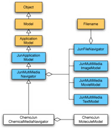
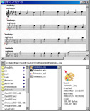
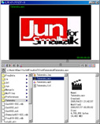
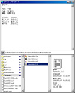
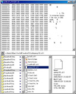
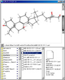
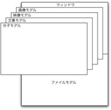

ファイルナビゲータ（JunFileNavigator）、マルチメディア画像モデル（JunMultiMediaImageModel）、マルチメディア映像モデル（JunMultiMediaMovieModel）、マルチメディア文章モデル（JunMultiMediaTextModel）などを集約したじゅんのアプリケーションであるマルチメディアナビゲータ（JunMultiMediaNavigator）を継承して作成されています。
|  |
| 化学メディアナビゲータの構造 |
新たに集約されたオブジェクトとして加わったものは、分子ビューア（ChemoJunMoleculeViewer）をスーパクラスにする分子モデル（ChemoJunMoleculeModel）であり、これによって画像・映像・文章などに加えて、MDL形式の分子ファイル（モルファイル）を見る（ナビゲートする）ための機能がつけ加わります。
|  |  |  |  |  |
| 画像 | 映像 | 文章 | ダンプ | 分子 |
このビジュアル構造は、ファイルモデルを下部に配置し、画像モデル・映像モデル・文章モデル、そして、分子モデルがオーバーレイ構造を採ります。
|  |
| オーバーレイ構造 |
ファイルモデルで、あるファイルが選択されると、その種別（拡張子）によって、適合するモデルが一つだけ選択され、そのモデルに対応したビューとコントローラが可視化され、制御が委ねられます。残りの他のモデルは不可視となります。そのタイミングはファイルモデルのファイル名が変更されたときですから、ファイルモデルのファイル名を保持するオブジェクトの依存物として、化学メディアナビゲータがチェンジ＆アップデートのブロードキャストを受信するように作られています。